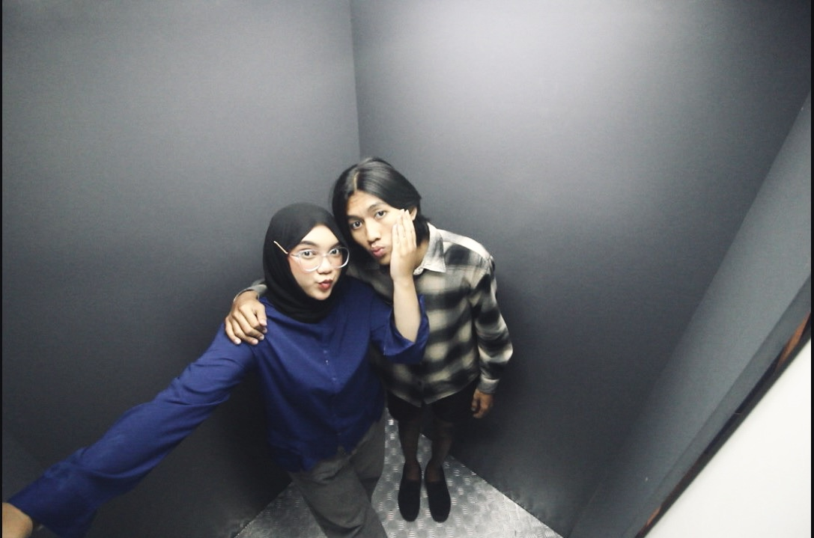

<!DOCTYPE html>
<html lang="en">
<head>
    <meta charset="UTF-8">
    <meta name="viewport" content="width=device-width, initial-scale=1.0">
    <title>Halooo Kecaaw</title>
   <!-- ... <link rel="stylesheet" href="style.css"><!-- ... 
</head>
<body>
    <header>
        <h1>Untuk Kamu yang Paling Spesial Pake Kacang, Meses, Keju saking spesialnya semua ada di kamu ❤️</h1>
        <p>DISCLAIMER DULUUU YAHHHH MAAP KLO SEDIKIT ALAY ASKAHAEHDVHS.</p>
    </header>
    <main>
        <section class="reasons">
            <h2>Kamu Hebat Yah</h2>
            <ul>
                <li>Hebat karena sabar banget sama aku 😗</li>
                <li>Hebat karena wajahmu bikin aku lupa pulang Semarang 🕺🏼</li>
                <li>Hebat karena yaudah hebat aja pokoknya mah! 🫶</li>
            </ul>
        </section>
        <section class="future">
            <h2>Masa Depan Kita Niiehh</h2>
            <p>Kita usahakan jalan-jalan ke luar negeri naik mobil pick up terbang. Ini serius yah bukan becanda! ✨</p>
            <div style="max-width: 800px; margin: 0 auto;">
              
            </div>
        </section>
        <section class="gallery">
            <h2>Galeri Cinta 📸</h2>
            <p>"Setiap foto ini adalah bukti kecil kalau Tuhan tuh baik banget bikin kamu ada di dunia." 😛</p>
             <div class="photos">
                
                
                
             </div>
        </section>
        <section class="confession">
            <h2>Untukmu, Keyza Ardelia Jacinda ❤️</h2>
            <p>Aku punya sesuatu yang mau aku bilang, harus klik tombol di bawah ini dulu kalo mau liat!</p>
            <button onclick="showConfession()">Klik di Sini! 💌</button>
            <p id="confession-text" style="display: none; margin-top: 20px; font-size: 18px;">
                Haiii <strong>KEYZA ARDELIA JACINDA</strong>, lucuu ya kitaa pertama kenal lewat bumble dan akhirnya kita ketemu walaupun sedikit malas waktu aku masi di jogja hari terakhir, aku ngajak kmu bl bilang gabisa tapi bikin sg bl huahhhhrrgghh
                <br><br>
                sedikit flashback deh, waktu itu aku berangkat dri semarang jam set 3an sorelah, awalnya tu aku emang sengaja buat ngga bilang klo aku udah otw biar semakin km deg deg an tbtb aku di jogja hahahah
                tapi gatau kenapa aku takut klo kmu ada acara di malem itu, yauda deh akhirnya aku bilang ke kmu buat cek findmy huhuhu 
                <br><br>
                jujur selama perjalanan semarang-jogja nggatau kenapa aku happy banget, kya ngga nyangka aja kita akan bertemu dan jgn lupa dialog nya <strong>“KECAA” “ARVINNN”</strong> awokakokwows lucu bgtt 🥰. Udahh tu nyampelah di tempat alex trs kita janjian buat ketemu, jujur aku yg bener2 nggabisa tenang, bingung, takut campur jadi satu, aku setakut itu klo ngga sesuai sma ekspetasi kmu,
                smpe aku selalu nanya ke alex “gmn ni lex” berkali kali smpe dia emosi aokaokwo
                <br><br>
                akhirnya kita ketemu tuhh, jemput cowo depan gang awkoaokwo
                jujur aku ngga enak bgt sama kmu karna hrs jemput aku, mana kmunya nggamau bonceng malah ngeboncengin aku.
                Dari situ tuh dalem hati “njirr wangi bgt nih cewe” hahahah
                dari makan bakmi sampe bl aku masih blm berani buat natap muka kmu lama, karna masih setakut itu dan kmu berkali kali bikin aku saltinggggg askjksdsakj, mana jelek bgt salting aku, tapi jujur aku senenggg bangett 🫶🫶
                <br><br>
                dahh laa lewat beberapa hari akhirnya aku mulai berani buat pegang tangan kmu kek, nyender kek hahahah seseneng itu tauu 🥰. Andai ada alat pengukur senang udh jebol tu alat aowkokaow
                jujur aku masih ngerasain senengnya semua yg kita laluin di jogja dri makan, bl, keluar smpe tengah malem, ke malioboro nyampe subuh dan masi banya lagi hahaha, apalagi akhirnya kmu nyamper aku ke semarang asjksahsa SIAPA YG GA SENENG COBA.
                <strong>Kecaaa ternyata kmu secantikk, selucuuu, dan seperhatian itu yaaaa</strong> 🫶🫶
                <br><br>
                emmm caa, kalo boleh jujur dari situ aku udah mulai suka sma kamu, mulai nyaman, aku ngerasa selalu punya tempat khusus buat kamu.
                Kecaaaa, <strong>mau ngga kasi aku kesempatan yang bahkan selamanya buat jadi seseorang yg ada di hatimu?</strong> pacaran maksud akoehh heehehheh.
                Yaa walaupun aku ngerasa masi jauh dari sempurna, tapi aku bakal terus jadi yang terbaik buat kamu dan aku harap semoga kmu mau bantu aku bikin hubungan kita berdua sesempurna ituu.
                Aku tunggu yah jawaban kamu….
                <br><br>
                LOVE U, <strong>Keyza Ardelia Jacinda</strong> 💐🫶
            </p>
        </section>
        <script>
            function showConfession() {
                const confessionText = document.getElementById('confession-text');
                confessionText.style.display = 'block';
            }
        </script>
        
    </main>
    <footer>
        <p>Apapun yang terjadi, aku siap jadi 'Wi-Fi' dalam hidupmu, selalu terkoneksi dan nggak pernah putus! 💖 ANJAAAAYYY FAKMENNNNNN</p>
        <button onclick="alert('Mwah! 😘')">Cium virtual! 💋</button>
    </footer>

    <script>
        function showConfession() {
            const confessionText = document.getElementById('confession-text');
            confessionText.style.display = 'block';
        }
    </script>
</body>
</html> ... -->
